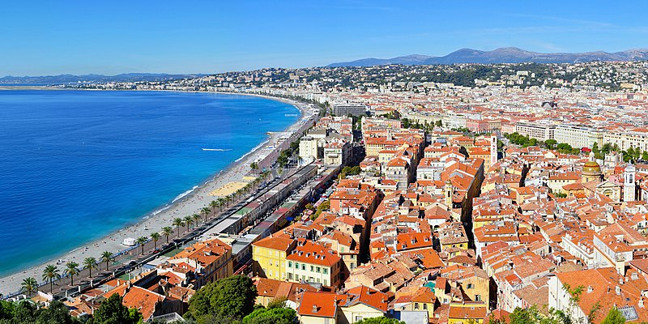
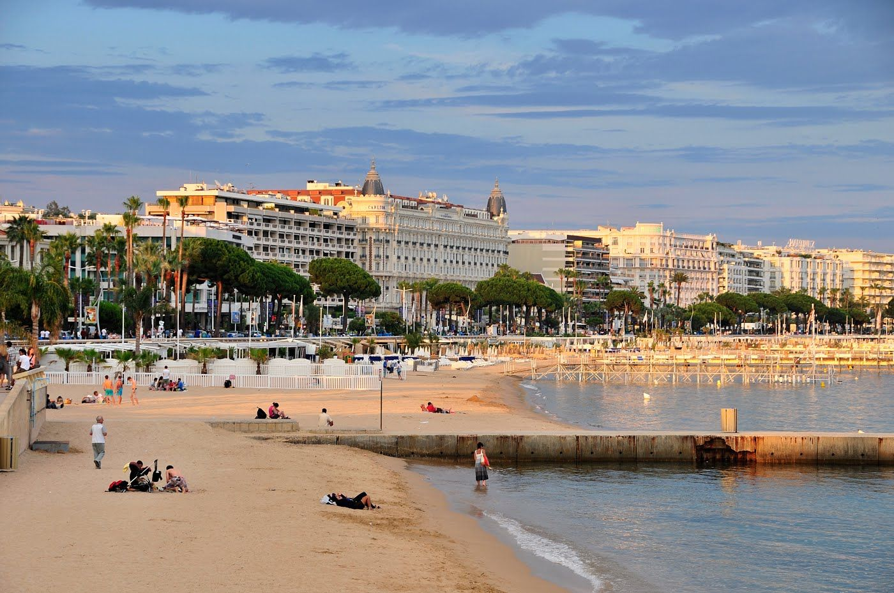
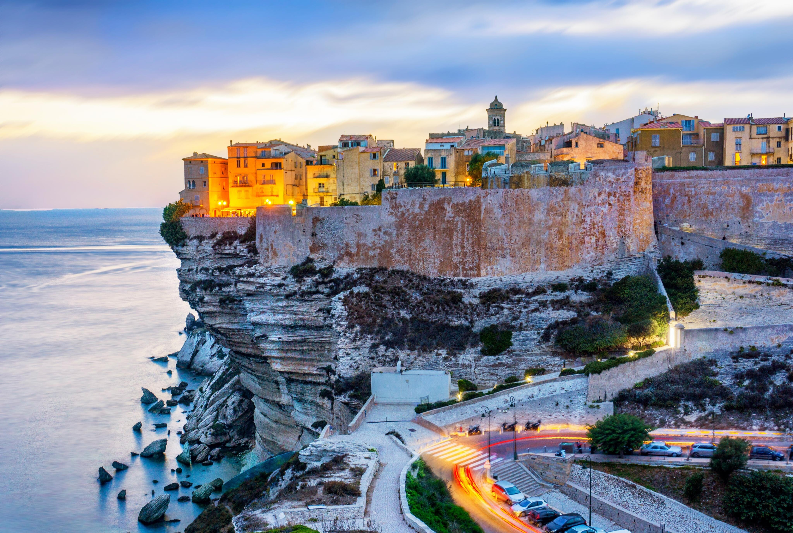

Přírodní krásy Francie
Francie je země s bohatou a rozmanitou přírodou. Nachází se zde nádherné přímořské oblasti s rozhlehlým Středozemním mořem a Atlantickým oceánem. K nejznámějším pobřežím patří Azurové popřeží, jako je Nice a Cannes nebo přímořské oblasti jako je Normandie a Beretaně. Také se zde nachází malebné jezera a řeky. Francouzskou přírodu si zamiluje každý milovník přírody.
Přímořské přírodní krásy
Azurové pobreží Nice
Azurové pobřeží Nice je známé svými krásnými plážemi, azurovým mořem a slunečným počasím. Nachází se na jihovýchodě Francie a je oblíbeným cílem turistů z celého světa.


Azurové pobřeží Cannes
Zdejší modré Středozemní moře s zálivy, ostrovy a zlatými plážemi inspirovalo i nejslavnější malíře 20. století. A pokud máte rádi filmovou scénu, nemůžete vynechat Mezinárodní filmový festival v Cannes, který je jedním z nejprestižnějších společenských akcí na Azurovém pobřeží.
Vnitrozemní přírodní krásy
Gorges du Verdon
Tento kaňon je největší v Evropě a nachází se v regionu Provence. Je dlouhý 25 kilometrů a v některých místech až 90 metrů široký a 800 metrů hluboký.


Bonifacio
Malinké městečko na Korsice, které bylo vystavěno na malém izolovaném poloostrově z jasně bílého vápence. Městečko leží na samém jihu ostrova a je omýváno azurovými vlnami Tyrhénského moře.